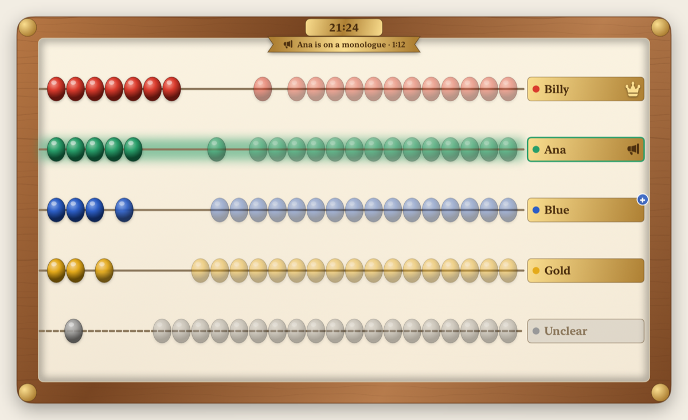
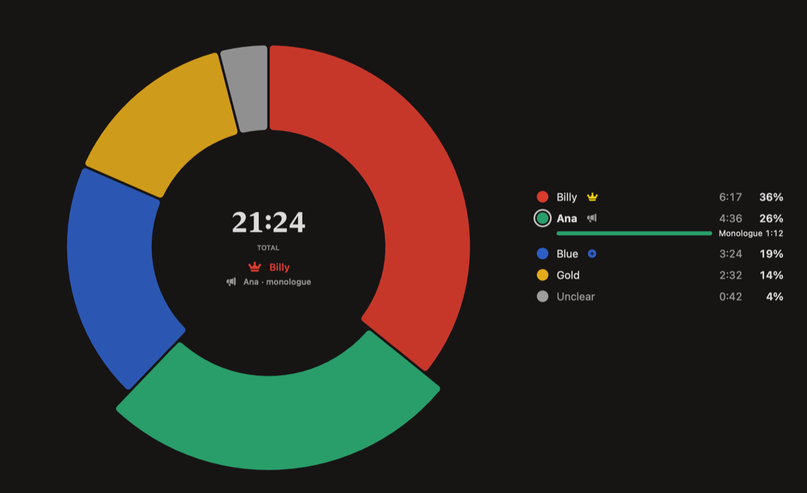

Keeps count, stays on-device.
Every conversation has a main character. Blabacus listens through your Mac's microphone, tells the voices apart, and shows each person's share of the talking on a hand-crafted abacus you can read from across the room.

Free. Private. On-device.
Your conversations never leave your Mac. No accounts, no tracking, no ads, and no network access at all. Audio is never recorded or stored.
State-of-the-art AI on the Neural Engine
Speaker detection runs on the Apple Neural Engine with NVIDIA Nemotron 3 streaming diarization (in real time, up to 8 voices; most accurate with two to four people), and WeSpeaker voice embeddings on the CPU recognize who is who.

Requires a Mac with Apple silicon and 16 GB of memory, on macOS 26 or later.
Features
- Abacus view for a glance, pie view for the numbers.
- Monologue detection: notices when someone holds the floor while everyone else just says "mm-hm".
- Learns voices you choose to name, and recognizes them next time.
- Mini View: a small floating window in the corner of your screen, or just the menu bar.
Available on the Mac App Store for macOS 26 and Apple silicon.